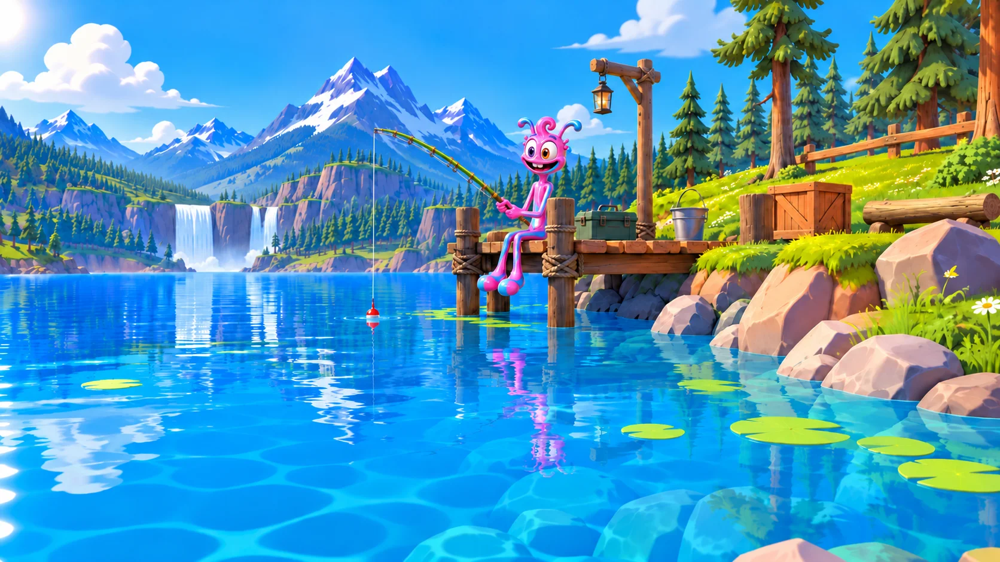
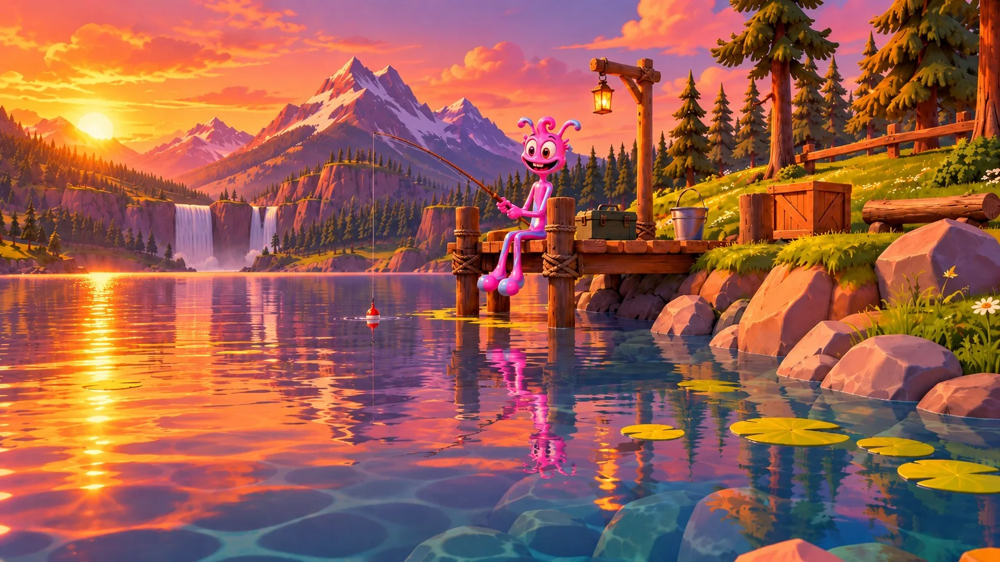
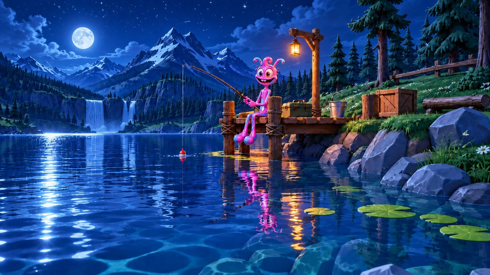

Gummy - How to Play
Back to Gummy the Fisherman · The numbers behind it: Game Mechanics
These are the rules from the game's own "HOW TO PLAY" window (Production):
- Players take turns. Each sentence has a gap: pick the word that completes it.
- Right answer: Gummy reels the fish in. Wrong answer: the fish pulls Gummy toward the water!
- Every player answers 2 times per level. Then comes the catch bar: one player at a time taps the CATCH! button on their own card (or Space) while a fish swims through the net. Then Gummy lands the fish.
- Better answers = a bigger net. Right and fast answers that round make your net wider, so it's easier to hit.
- Solo: in the net = your fish, missed = junk from that place. Team / 6p: everyone tries once; the more of you get it into the net, the heavier the team's fish. Nobody in the net = junk.
- Team: one fish per round for the whole team. Solo: every player catches their own fish every round, from their own answers.
- 3 levels, each harder than the last.
- Every catch is a fish you don't have yet, until the Fish Index is full.
- The fish's weight comes from your answers: every right answer adds kilos, and the faster you answer, the more.
- Right answers in a row count more and more, all game long. A wrong answer adds nothing and breaks the streak.
- At the end, the fish go on the scale. Everyone gets points: 100 for every kilo of fish + up to 50 for every fast right answer (in Team and 6p the team's fish points are shared equally by the players who got it into the net; a player who missed gets only their speed points). Most points wins! The kilos are still shown.
The window also runs a demo scale that weighs the fish one after another.
The three rounds
| Round | Map | Sentences | Price multiplier |
|---|---|---|---|
| 1 | Sunny Pond | easy | ×1 |
| 2 | Sunset River | harder | ×1.5 |
| 3 | Midnight Ocean | hardest | ×2 |



Game flow
flowchart TD
L[Loading screen] --> LB[Lobby]
LB -->|How to play / Fish index / Settings| LB
LB -->|Start fishing| RC[Round card: MAP · name · round dots · Start]
RC --> T[Turns: each player answers 2 sentences]
T --> CB[Catch bar: each player taps once]
CB --> C[Gummy lands the fish: catch screen]
C -->|6p mode| PULL[Pull cutscene]
C -->|rounds 1-2| RC
PULL --> RC
C -->|after round 3| W[Weigh-in on the scale]
W --> B[Leaderboard]
B --> R[Review answers → Download PDF]
- Lobby: the money total, Settings, the tagline "Complete the sentence with the right word. Help Gummy land the big one!", hero cards ("Ready to fish"), the answer time, Team / Solo / 6p, the package picker, and a row with [How to play] [Start fishing] [Fish index].
- Round card: "MAP", the tilted map name, round dots, and the wavy Start button. The card's colour matches the round.
- Catch screen: Gummy holds the fish; it shows the rarity, kilos and price. In Solo, every card shows its own fish and Gummy holds the round's best catch.
- Weigh-in: the fish go on the scale one after another. In Team and 6p they sit side by side. The 6p game ends on a final photo with a crown for the winner.
- Leaderboard → Review answers: one column per player with Round 1–3 tabs, the grammar rule for each question, and Download (a PDF for all players or one player).